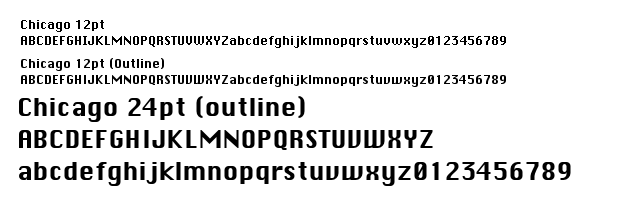

あ…ありのまま 今起こった事を話すぜ！「大都会岡山 Advent Calendarを見ていたら、11日目に登録されていた」な…何を言っているのかわからねーと思うが おれも 何をされたのかわからなかった…
ということで、内容は不問らしい 大都会岡山 Advent Calendar 2012 11日目で、#LOVEFONTをぶち込みます！
往年の名フォント「Chicago」
タイトルとキャッチの画像を見て「マジでこれかよ…」と思われた方もいらっしゃるかと思いますが、今回チョイスしたのは、Chicagoです。
MacintoshのOS標準フォントとして、Mac OSと呼ばれる前からのMacintoshやiPodでも使われていました。都市の名前が付いたフォントの中でおそらく最も有名で、旧来のマカーの中ではHelveticaに匹敵するフォントではないでしょうか！（言い過ぎ）
英語OSではメニューやシステムのメッセージなど、あらゆるところに使われています。日本語OSでは、起動時の「Welcome to Macintosh.」や爆弾が出た時のメッセージなどで見ることが出来ます（旧環境でDTPされてる方は、まだお馴染みでしょうか）。
フォルム

何と言ってもビットマップ 12ptで表示した時が、So Cool！今でこそ懐かしい感じがしますが、当時はこのフォントで表示したくて、いろいろと設定をいじくったものです。
ステムは太く、バーが細いサンセリフ体です…といってもビットマップが発祥なので、そういう形に落ち着いちゃいますね。小さいとそうでもないですが、意外と主張の強いフォントで、大きくなるにつれてちょっとしつこい感じになります。アンチエイリアスがかかっているのはまだしも、大きくなると正直ちょっと微妙ですね…。
今でこそ、UIで使われているフォントにもアウトラインフォントが使われていますが、昔は特定のサイズに最適化されたビットマップでの表示が主流でした。たった1ドットの差が文字の判別に大きく関わるので、デザインもその辺りが考慮されています。といっても、全体としての判別性が高いかと言えば、そうでもないですが。
また、ビットマップフォントとアウトラインフォントでは、微妙にフォルムが異なります。
デザイナーはスーザン・ケア。Macintoshで使われていたアイコンやフォントを始め、Dogcowなどのキャラクターも作成した方です。またMac以外でも、WindowsやOS/2のアイコンも担当。Windowsのメモ帳とかも有名ですね。
Susan Kare – User Interface Graphics
使いどころ
今更使うのもアレですが、使うとすればUIやワンポイントで使うのがよろしいかと。ただChicagoを使うと、何故か懐かし感じになってしまうのは仕様ですかね…
たまにフライヤーで使われているのを見ますが、印刷物でデカデカと使うようなフォントではないと思います。8ptぐらいならまだしも、見出しで使っていて「ちょっとくどいな…」って場合が多いです。
といいつつ、OSXになってバンドルがなくなってしまいました。まぁ検索すると誰かが作ったフォントが出てくるんですが。また、OSXならKrungthepというタイ語のフォントの欧文がChicagoに似ているので、気になった方はこちらを使いましょう。
というわけで、なぜか技術系の方に混じり、#LOVEFONTのようで大都会岡山 Advent Calendar 2012 11日目をお届けしました。